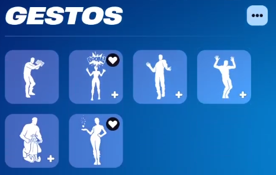

|
La
taquilla es un lugar importante para la personalización de el usuario,
aqui puedes editar muchas cosas de tu juego como tu skin o tu mochila
etc
|

|
Aquí puedes editar bailes que puedes hacer con amigos, es una caracteristica no muy importante pero puede divertirte
|

|
Aquí
puedes editar cosas de la lobby o pantalla de carga, aqui esta el logo
del perfil, la pantalla de carga y la música que quieres que suene
|
|
Aquí
puedes editar el vehiculo, dentro de la partida puedes utilizar
vehiculos para transportrarte de un lugar a otro más rápido, puedes
editar el diseño el tipo de coche e incluso que ruedas utilizar
|